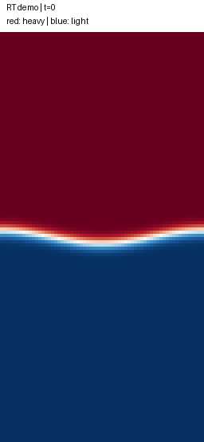

A SMALL LAB FOR FLUID FLOW
See the flow. Check the numbers.
Run four analytical benchmarks and a Rayleigh–Taylor interface experiment in your browser.
Phase field · red: heavy, blue: light
Two-dimensional velocity
Velocity profile
Amplitude decay
Try a guided experiment
Rayleigh–Taylor · Python reference run

A low-Atwood diffuse-interface experiment: heavy material sinks and light material rises. This saved 64 × 128 Python run is a reference. Select Rayleigh–Taylor above to compute a new run in your browser.
Conservation and basic controls were checked. Grid convergence and quantitative growth-rate validation remain open.
python -m lbm_lab.rayleigh_taylor --output rt-runRead the model, controls and results
What this experiment checks
Runs use D2Q9-BGK collision, Guo forcing and halfway bounce-back walls where applicable. The browser implementation is tested against the Python solver. A passing case is a check for these conditions, not a guarantee for other flows.
Everything runs on your device. No account, API key or data upload is needed.